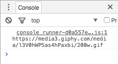

Working with the Response
Now that we've gone over how to search for exactly what we want, it is finally time to show you how to work with the results of that search. So, let's go back to that example I showed earlier in which I search for "batman" gifs, but this time we'll look at a cleaned up version of the example link:
{
"data": [{
"type": "gif",
"id": "l3V0hWP5as4hPaxbi",
"slug": "batman-gotham-robin-l3V0hWP5as4hPaxbi",
"url": "http:\/\/giphy.com\/gifs\/batman-gotham-robin-l3V0hWP5as4hPaxbi",
"bitly_gif_url": "http:\/\/gph.is\/1SJHbw4",
"bitly_url": "http:\/\/gph.is\/1SJHbw4",
"embed_url": "http:\/\/giphy.com\/embed\/l3V0hWP5as4hPaxbi",
"username": "walternewton",
"source": "http:\/\/www.walternewton.com",
"rating": "",
"content_url": "",
"user": {
"avatar_url": "https:\/\/media2.giphy.com\/avatars\/walternewton\/e2di4APSGOai.gif",
"banner_url": "",
"profile_url": "https:\/\/giphy.com\/walternewton\/",
"username": "walternewton",
"display_name": "Walter Newton",
"twitter": "@walternewton"
},
"source_tld": "www.walternewton.com",
"source_post_url": "http:\/\/www.walternewton.com",
"import_datetime": "2016-04-27 10:27:29",
"trending_datetime": "1970-01-01 00:00:00",
"images": {
"fixed_height": {
"url": "https:\/\/media1.giphy.com\/media\/l3V0hWP5as4hPaxbi\/200.gif",
"width": "200",
"height": "200",
"size": "83792",
"mp4": "https:\/\/media1.giphy.com\/media\/l3V0hWP5as4hPaxbi\/200.mp4",
"mp4_size": "39514",
"webp": "http:\/\/media1.giphy.com\/media\/l3V0hWP5as4hPaxbi\/200.webp",
"webp_size": "148590"
},
"fixed_height_still": {
"url": "https:\/\/media1.giphy.com\/media\/l3V0hWP5as4hPaxbi\/200_s.gif",
"width": "200",
"height": "200"
},
"fixed_height_downsampled": {
"url": "https:\/\/media1.giphy.com\/media\/l3V0hWP5as4hPaxbi\/200_d.gif",
"width": "200",
"height": "200",
"size": "18700",
"webp": "http:\/\/media1.giphy.com\/media\/l3V0hWP5as4hPaxbi\/200_d.webp",
"webp_size": "25638"
},
"fixed_width": {
"url": "https:\/\/media1.giphy.com\/media\/l3V0hWP5as4hPaxbi\/200w.gif",
"width": "200",
"height": "200",
"size": "83792",
"mp4": "https:\/\/media1.giphy.com\/media\/l3V0hWP5as4hPaxbi\/200w.mp4",
"mp4_size": "39514",
"webp": "http:\/\/media1.giphy.com\/media\/l3V0hWP5as4hPaxbi\/200w.webp",
"webp_size": "148590"
},
"fixed_width_still": {
"url": "https:\/\/media1.giphy.com\/media\/l3V0hWP5as4hPaxbi\/200w_s.gif",
"width": "200",
"height": "200"
},
"fixed_width_downsampled": {
"url": "https:\/\/media1.giphy.com\/media\/l3V0hWP5as4hPaxbi\/200w_d.gif",
"width": "200",
"height": "200",
"size": "18700",
"webp": "http:\/\/media1.giphy.com\/media\/l3V0hWP5as4hPaxbi\/200w_d.webp",
"webp_size": "25638"
},
"fixed_height_small": {
"url": "https:\/\/media1.giphy.com\/media\/l3V0hWP5as4hPaxbi\/100.gif",
"width": "100",
"height": "100",
"size": "38346",
"mp4": "http:\/\/media1.giphy.com\/media\/l3V0hWP5as4hPaxbi\/100.mp4",
"mp4_size": "18409",
"webp": "http:\/\/media1.giphy.com\/media\/l3V0hWP5as4hPaxbi\/100.webp",
"webp_size": "71662"
},
"fixed_height_small_still": {
"url": "https:\/\/media1.giphy.com\/media\/l3V0hWP5as4hPaxbi\/100_s.gif",
"width": "100",
"height": "100"
},
"fixed_width_small": {
"url": "https:\/\/media1.giphy.com\/media\/l3V0hWP5as4hPaxbi\/100w.gif",
"width": "100",
"height": "100",
"size": "38346",
"mp4": "http:\/\/media1.giphy.com\/media\/l3V0hWP5as4hPaxbi\/100w.mp4",
"mp4_size": "18409",
"webp": "http:\/\/media1.giphy.com\/media\/l3V0hWP5as4hPaxbi\/100w.webp",
"webp_size": "71662"
},
"fixed_width_small_still": {
"url": "https:\/\/media1.giphy.com\/media\/l3V0hWP5as4hPaxbi\/100w_s.gif",
"width": "100",
"height": "100"
},
"downsized": {
"url": "https:\/\/media1.giphy.com\/media\/l3V0hWP5as4hPaxbi\/giphy.gif",
"width": "480",
"height": "480",
"size": "193557"
},
"downsized_still": {
"url": "https:\/\/media1.giphy.com\/media\/l3V0hWP5as4hPaxbi\/giphy_s.gif",
"width": "480",
"height": "480"
},
"downsized_large": {
"url": "https:\/\/media1.giphy.com\/media\/l3V0hWP5as4hPaxbi\/giphy.gif",
"width": "480",
"height": "480",
"size": "193557"
},
"downsized_medium": {
"url": "http:\/\/media1.giphy.com\/media\/l3V0hWP5as4hPaxbi\/giphy.gif",
"width": "480",
"height": "480",
"size": "193557"
},
"original": {
"url": "https:\/\/media1.giphy.com\/media\/l3V0hWP5as4hPaxbi\/giphy.gif",
"width": "480",
"height": "480",
"size": "193557",
"frames": "42",
"mp4": "https:\/\/media1.giphy.com\/media\/l3V0hWP5as4hPaxbi\/giphy.mp4",
"mp4_size": "79212",
"webp": "http:\/\/media1.giphy.com\/media\/l3V0hWP5as4hPaxbi\/giphy.webp",
"webp_size": "298326"
},
"original_still": {
"url": "https:\/\/media1.giphy.com\/media\/l3V0hWP5as4hPaxbi\/giphy_s.gif",
"width": "480",
"height": "480"
},
"looping": {
"mp4": "https:\/\/media.giphy.com\/media\/l3V0hWP5as4hPaxbi\/giphy-loop.mp4"
}
}
}
Analyzing the Object:
This is much nicer than the result we saw before, right? But it is actually the same thing! This time, we can clearly see the "Name":"Value" structure that was mentioned earlier. From this view, it's not too difficult to check out the links that are given in the object. For example, if you copied the URL from the "fixed_width" property, you would get the gif:
If you begin doing this for the other URLs, you'll find that they are all the same gif. Some of them just happen to be larger, smaller, stills of the gif, or are a different file format or quality. You can actually find which "Names" correspond to the formatting of the gif here if you scroll up to the Rendition Guide. So, I won't go over the specific types much more than this.
Getting the GIFs
Note: From here on out, I'm going to assume that you have previous knowledge of Javascript objects and arrays. If you don't, you can find a good summary of Javascript objects here and of arrays here.
If you're ready to move on, we've reached the moment you've been waiting for: How to actually get the gifs from this file. To start, let's go back to our code from the Dealing with Javascript section:
var req = new XMLHttpRequest();
var base = "http://api.giphy.com/";
var query = "v1/gifs/search";
var params = "?q=batman";
var key = "&api_key=dc6zaTOxFJmzC";
req.open("GET", base + query + params + key, true);
req.addEventListener('load', function() {
var response = JSON.parse(req.responseText);
console.log(response.data)
});
req.send(null);
Remember that this sends the array of 25 objects (the search results) to the browser's console. Though sending the response to the console isn't very useful, we're going to continue doing it until we know how to get what we want from the response. To do this, let's walk through an example in which we try to log the URL of the gif that I posted above.
We start by understanding what the variable response actually is. In the simplest sense, it is basically that long string of text that you see when you try to open the API request in your browser. If you look closer, you'll see the braces that indicate that it is an object. And so, without actually plugging anything into our code, let's consider these two lines:
var response = JSON.parse(req.responseText);
console.log(response.data);
We know that this outputs the list of results from our query, but why? Well, if you think about it, response is the object that contains the list of results as well as some other things, and if you look closely, the property named "data" is the exact property that contains those results.
Knowing this, we can actually write this as
var response = JSON.parse(req.responseText);
var listOfResults = response.data;
console.log(listOfResults);
and it would log the same thing to the console. Interesting. So, how would we go about grabbing one of those results? Well, if "data" is an array (as indicated by the "[]" that follow it), we can use the Javascript notation for arrays to select an element. For example, if we wanted to log the first object to the console, we would know that it was located at place "0", so
var response = JSON.parse(req.responseText);
var listOfResults = response.data;
var firstResult = listOfResults[0];
console.log(firstResult);
would log the first result from our search. Okay, so we now have access to our first result and all of the data that goes with it. From here, the code is pretty straight forward.
var response = JSON.parse(req.responseText);
var listOfResults = response.data;
var firstResult = listOfResults[0];
var ourGif = firstResult.images.fixed_width.url;
console.log(ourGif);
I know, that was a pretty big jump at the end, but I trust that you can follow the path. For any of these object files, the gifs are located under the "image" property. After that, you just choose what format you want the gif to be (in this case, it was "fixed_width"), and specify that you want the URL.
I've posted a working example of this on CodePen. As with the last CodePen example, right-click and select inspect to see the console in the right sidebar. You should see the link for the gif. It will look something like this:

Feel free to play around with these variables to see what you get, before moving on.